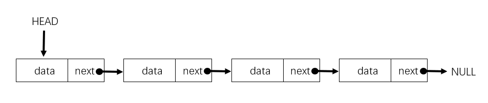

数据结构之单链表
2018 algorithm链表是线性表里常见的数据结构，不需要连续存储到内存中。每一个结点都包括了存储数据的结点 data 以及指向下一个结点的指针 next。

在单链表有两个特殊的结点，分别是头结点和尾结点。头结点用来记录链表的基地址，用来遍历整条链表。而尾结点是指向空地址 NULL，代表链表上最后一个结点。
插入，删除与遍历
单链表的一个优点就是无需确定内存大小，方便插入与删除。因为在链表的插入与删除操作中，我们不需要搬移结点，只需要改变相邻的结点的指针。时间复杂度是 O(1)。
链表必须从头开始依次遍历查询,如果需要随机访问第 k 个元素,则无法根据首地址和下标，通过寻址公式计算出对应的内存地址，而是需要根据指针一个个结点依次遍历，直到找到对应的结点。时间复杂度是 O(n)。
C 中的表示
在 C 中我们可以用结构体表示结点，以下是一个带整数的链表结点的示例
// 一个链表结点
struct Node {
int data;
struct Node *next;
}
// 简单的列表遍历
void printList(struct Node* head) {
while (head != NULL) {
printf(" %d ", head->data);
head = head->next;
}
}
// 创建新结点
node createNode() {
struct Node* temp = (struct Node*)malloc(sizeof(struct Node));
temp->next = NULL;
return temp;
}
// 添加结点--在前面添加结点
void push(struct Node **head, int data) {
struct Node* temp = (struct Node*)malloc(sizeof(struct Node));
temp->data = data;
temp->next = (*head);
(*head) = temp;
}
// 添加结点--在指定元素后面添加添加结点
void insertAfter(struct Node* prev, int data) {
if (prev == NULL) {
printf("the previous node connot be NULL");
return;
}
struct Node* temp = (struct Node*)malloc(sizeof(struct Node));
temp->data = data;
temp->next = prev->next;
prev->next = temp;
}
// 添加结点--在末尾添加结点
void append(struct Node **head, int data) {
struct Node* temp = (struct Node*)malloc(sizeof(struct Node));
struct Node *last = *head;
temp->data = data;
temp->next = NULL;
if(*head==NULL) {
*head = temp;
return;
}
while (last->next != NULL) {
last = last->next;
}
last->next = temp;
return;
}
// 删除结点--根据指定的值
void deleteNode(struct Node **head, int key) {
struct Node* temp = *head, *prev;
if (temp != NULL && temp->data == key) {
*head = temp->next;
free(temp);
return;
}
while(temp != NULL && temp->data != key) {
prev = temp;
temp = temp->next;
}
if (temp == NULL) return;
prev->next = temp->next;
free(temp);
}
// 删除结点--根据指定的位置
void deleteNode(struct Node **head, int position) {
if (**head == NULL) return;
struct Node* temp = *head;
if (position == 0) {
*head = temp -> next;
free(temp);
return;
}
for(int i=0; temp!=NULL && i<position-1; i++) {
temp = temp->next;
}
if(temp == NULL || temp->next == NULL) {
return;
}
struct Node *next = temp->next->next;
free(temp->next);
temp->next = next;
}
// 删除链表
void deleteList(struct Node** head) {
struct Node* current = *head;
struct Node* next;
while(current != NULL) {
next = current->next;
free(current);
current = next;
}
*head = NULL;
}
// 返回单链表的长度
void listLength() {
int length = 0;
struct Node* current = head;
while(current != NULL) {
length++;
current = current->next;
}
return length;
}
// 查找链表是否有值key，有的话返回true，否则返回false
bool search(struct Node* head, int key) {
struct Node* current = head;
while(current != NULL) {
if (current->data == key) return true;
current = current->next;
}
return false;
}
// 获取指定位置的值，否则返回错误
int getNode(struct Node* head, int index) {
struct Node* current = head;
int count = 0;
while(current != NULL) {
if (count == index) return (current->data);
count++;
current = current->next;
}
assert(0);
}